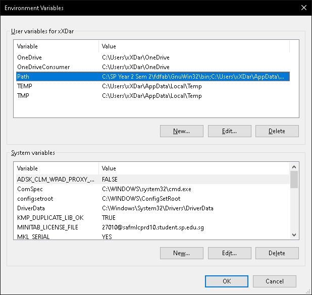
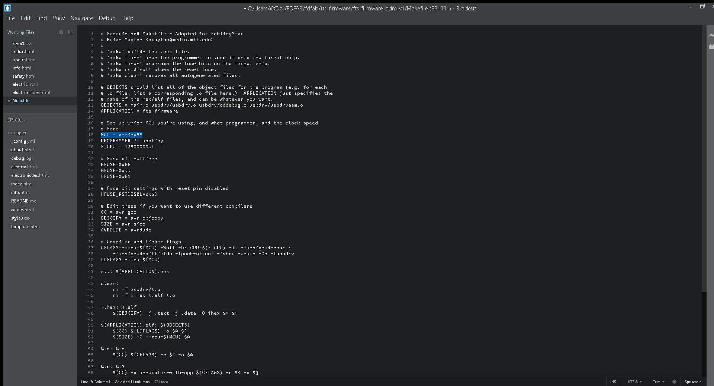
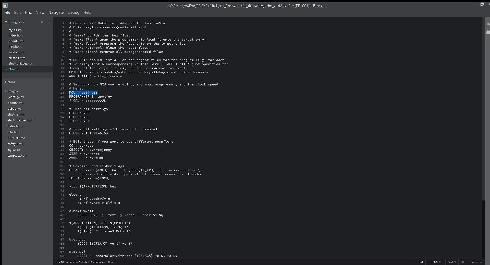
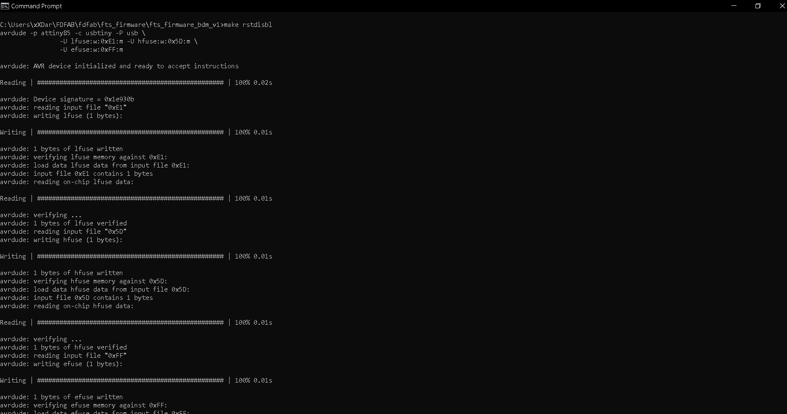
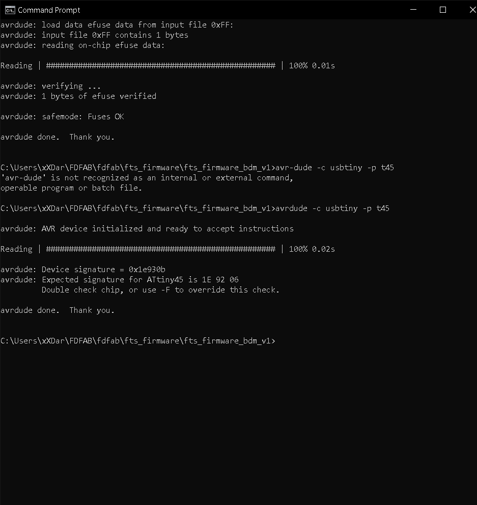

Electronics Production
For the start of my Further Digital Fabrication and Prototyping(FDFAB) journey, we were introduced to CNC Machines, and also Printed Circuit Boards (also known as PCB). Previously, we were able to create our own design/creations with the use of an arduino, a microcontroller, where we can easily programme through its own software and connect other input and output devices to it. As for PCBs, we have to actually come up with our own board designs, before we are able to programme and add any devices to it.
Printed Circuit Boards (PCB)
So what is a PCB? A PCB mechanically supports and electrically connects electrical or electronic components using conductive tracks, pads and other features etched from one or more sheet layers of copper laminated onto and/or between sheet layers of a non-conductive substrate. Why do we make PCBs? When we create our own PCBs, we are able to customize the electronics to meet product requirements, the footprint of product, theres a greater reliability, ability to prototype and iterate faster and last but not least, it provides a better product integration. The first PCB that we were taught was called the In-System Programer(ISP) board.
In-System Programer(ISP)
An ISP also called in-circuit serial programming is the ability of some programmable logic devices, microcontrollers, and other embedded devices to be programmed while installed in a complete system, rather than requiring the chip to be programmed prior to installing it into the system. It allows firmware updates to be delivered to the on-chip memory of microcontrollers and related processors without requiring specialist programming circuitry on the circuit board, and simplifies design work. (Source: Wikipedia)
Individual Assignment
For our first individual assignment, we were tasked to convert 2 PNG images of a ISP board, as seen below, to Gcode to be milled by the CNC machine. Before we generate the Gcode, we were first told on the the different parameters or settings that were needed to do for our traces and outlines. The table is also shown below.


Recommended settings for Stepcraft
| Operation | Endmill size | Cut Speed | Cut Depth | Total Depth | Offset |
|---|---|---|---|---|---|
| Traces | 0.4 mm flat | 50 ~ 60 mm/min | 0.04 ~ 0.05 mm | 0.04 ~ 0.05 mm | 2 ~ 4 |
| Traces | 0.8 mm flat | 60 ~ 80 mm/min | 0.04 ~ 0.05 mm | 0.04 ~ 0.05 mm | 1 ~ 2 |
| Traces | 0.1 mm 30 deg V-bit | 50 ~ 60 mm/min | 0.04 ~ 0.05 mm | 0.04 ~ 0.05 mm | 1 ~ 2 |
| Board Outline | 0.8 mm flat | 50 ~ 80 mm/min | 0.42 ~ 0.45 mm | 1.65 ~ 1.70 mm | 1 |
Gcode Generation
To generate the Gcode, we first have to go to Mods. Once we are on that page, all we have to do is right click anywhere on the page to bring up a menu, which we then have to press Programs > Open Programs. Then just scroll down until you see G-code, scroll down further and click on mill 2D PCB. This will bring up the the setup page where you can input the different parameters and the actual PNG image.
On this page, the first thing we have to do is obviously inserst the PNG image. For a demo, i will be first doing the traces. Once that is done, ensure that the DPI setting is set to 1000. Once that is done, i can then go ahead and input the respective parameters as seen in the table above. Next i adjusted the speed settings to 50 for the cut and plunge speed. The final settings should look like the one seen below. Once al that is done, we can go ahead and press calculate to download the Gcode and view to see the path of the drill bit.
{kind=link}
When that is done, we can then do the same for the outline but keep in mind that the parameters are different. After we've generated the Gcode, we were then introduced to a machine called the CNC machine.
{kind=link}
In order to operate the CNC machine, we first have to ofcourse load our Gcode files on the laptop which is located beside the machine. To do so, simply click on Load File, and find the traces file. Once that is done, take a copper board, cover the non copper side of the board with double sided tape and place it on the protective layer on the machine. Once that is done, we then have to place a copper board on the sacrificial layer. The copper or shiny part of the board should be on top and below, we have to cover the board up with double sided tape and paste it on the sacrificial layer. Then on the laptop, use the arrow keys the control the X and Y axis of the machine and the Page-Up and Page-Down to control the Z axis. We first have to check if the Probe, the button on the machine, is working, by pressing on the Diagnostics and press on the probe to see if the probe lights up on screen. If it does means it is working. Once that is done, we can then go ahead and install a 30 degree V-bit and the calibrate the X and Y followed by the Z axis by using the probe.
{kind=link}
Photo of the laptop
After calibrating, we can go ahead and turn on the machine but pushing down the button, and pressing on cycle start. Once the cutting of the traces is done, we can then go ahead and load the outline file, and recalibrate the Z axis, leaving the X and Y axis as it is. Before cutting it out though, we first have to change the bit to a flat end-mill so cut through to copper board. The end product should look something like the one below:
{kind=link}
{kind=link}
Soldering
{kind=link}

For soldering, those are the components that are needed, and also where each components go to.
Before i solder, i used a pen knife to remove excess copper except the threads, then i put on some flux before soldering on the components. The end result looks as such. I also connected it to my laptop after using a DMM to check if my connections and solder are well done.
{kind=link}
{kind=link}
Troubleshooting
After soldering my board and using a DMM to test it out, I found out that there is a problem. The problem that i came across was that i soldered the LED incorrectly. The red and the green ones are at the wrong position. Since my current board already looks bad due to the amount of solder, i decided to cut a new board and resoldered everything. The second board looks way better than the first one as seen below. I checked it properly and found out that everything is working properly.
{kind=link}
Programming
To program my programmer board, i first need to find a working programmer board. I know it sounds ridiculous but its true. I need a board to transmit programs to MY board in order for my board to work. For my case, I used Mr Chew's (my lecturer) board.
- Software Download
Before i could do anything, i have to install some softwares.- AVR8 GNU Toolchain
- GNU Make
- AVRdude
- Zadig
- fts software
All these softwares are available at Carlos Siles Projects site.
-
Environment Variable
Once installed, we first have to set the different paths. To do that, all you have to do is simply Control Panel > System and Security > System > Advanced Settings > Environment Variables. Once there, click on the PATH, and add the different paths as shown below.

-
Programming
Once that is done, we can start programming. To do that, just get your command prompt by typing CMD at your windows search bar. Next you need to find you need to find your fts software folder. To do so, just type cd on your command prompt, followed by your folder path, as seen below. Next you need to edit your Makefilefolder if you are using a different type of chip. For me since im using a tiny 85, i will change 45 to 85. Once that is done, i can go ahead and do the command make. After command is completes, a file called fts_firmware.hex will be generated.
 


Next, run make flash, this command will erase the target chip, and program the flash memory with the contents of the .hex file built. You should see several progress bars while avrdude erases, programs, and verifies the chip.

After programmed the flash memory, the next thing is to set the configuration fuses. First, set the fuses that control where the microcontroller gets its clock source from, because the board works as a USB device and it requires the clock to come from the PLL. Confirmed that USB works, set the fuse that disables the reset pin and turns it into a regular GPIO pin, i.e. letting the chip use the reset pin to program other boards, but will disable the ability for this chip to be programmed. Run the make fuses command. This will set up all of the fuses except the one that disables the reset pin.

Check USB Functionality
Now, the USB should be detected if you were to connect your own board to your computer. If not, all you have to do is use Zadig, and and make sure that it is selected as shown below, then click on install.

Once that is done, head on to device manager and see if your board is detected. If it is, it should be shown as such.

The final steps to turn your board into a working ISP programmer is firstly you need to change the bit that will turn the ATtiny45's reset pin into a GPIO pin, this will disable the ability for this chip to be programmed. When everything is working, connect the working AVR programmer to my board for the last time and run make rstdisbl. This is similar to make fuses command, and include that reset disable bit. After executing, avrdude will never be able to talk to this chip again through the ISP header. 
Final step!! Once all that is done, i just execute the program as shown below after connecting my programmer board to my target board. If all goes well, your command prompt should look as such. 
{kind=link}
{kind=link}
{kind=link}
{kind=link}